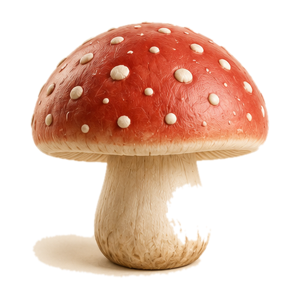
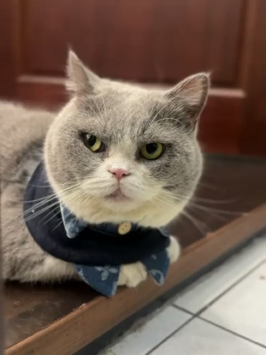
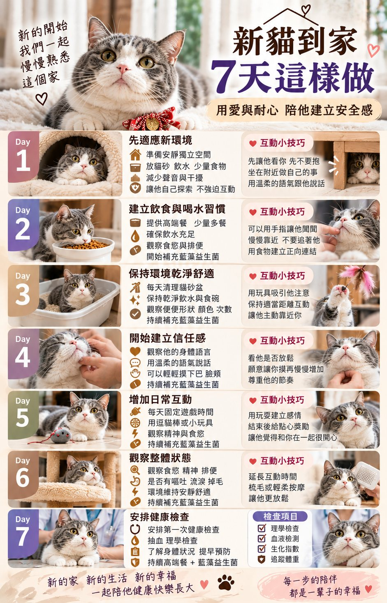
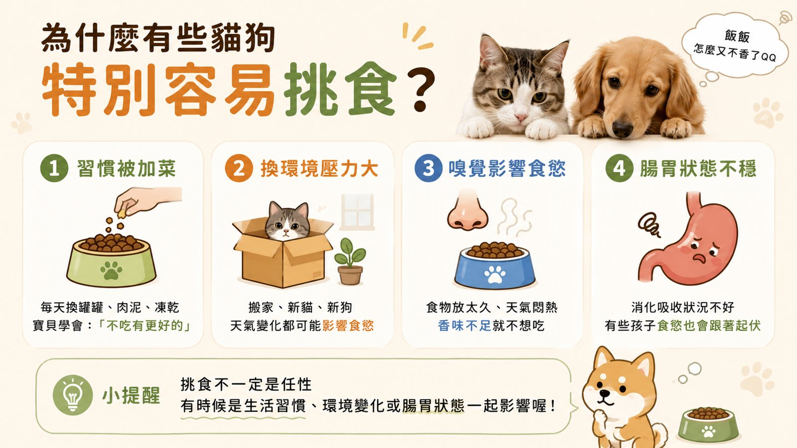
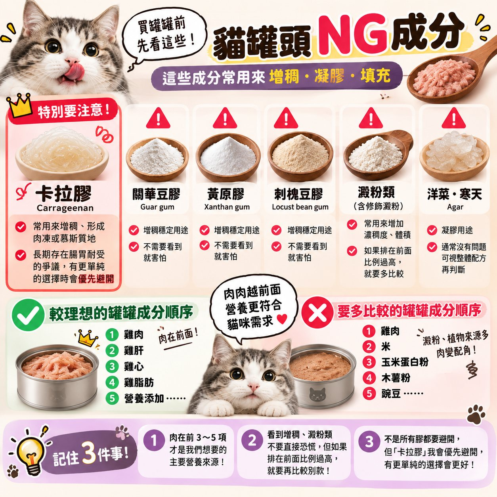
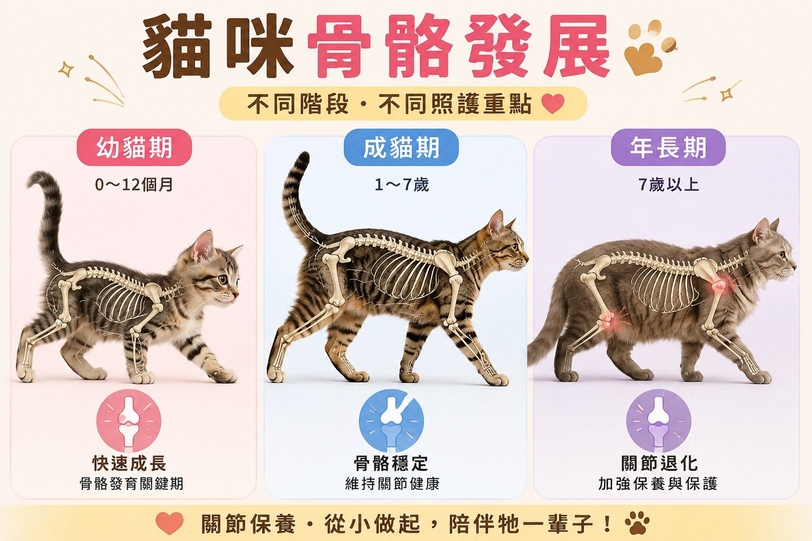

香菇爸護貓手冊八年照護筆記

SHROOM CARE GUIDE
從到家第一天
從到家第一天
陪牠健康長大
香菇爸八年照護筆記 ~ 新手・腸道・腎臟・成分
點一下主題就會展開 👇
🏡新貓到家 7 天這樣做用愛與耐心 陪牠建立安全感›

🔍 點圖片可以放大1
前三天 先不要抱給牠獨立空間 讓牠自己決定什麼時候靠近你
2
每天看吃喝拉撒食慾、喝水、便便 是這週最重要的觀察
3
第 7 天安排健檢理學檢查、血液檢測 先了解牠的身體狀況
!
完全不吃超過 24 小時、尿不出來、一直吐不要等適應期 直接就醫
📋貓舍送貓前 一定要做的檢查不是只有可愛 也要健康才可以回家›
點一下主題就會展開 👇
💩為什麼幼貓特別容易軟便？多數不是生病 是身體還在適應›
 🔍 點圖片可以放大
🔍 點圖片可以放大
1
換食物要慢7～10 天新舊混著換，不要一次全換
2
環境先穩定剛到新家壓力大，腸胃也會跟著敏感
3
水要喝夠水喝夠，消化和排便才會順
!
軟便超過 24～48 小時、拉水、帶血加上嘔吐、沒精神、不吃東西 ~ 請直接就醫，幼貓更不能等
🍽️挑食 有時候是腸胃在說話不一定是任性›

🔍 點圖片可以放大1
固定主食每天換口味，貓咪會學到「不吃會有更好的」
2
固定時間開飯吃不完的收起來，下一餐再給
3
同時看便便挑食又軟便，可能是腸胃狀態不穩，可以記錄下來問獸醫
點一下主題就會展開 👇
🥛牠一天該喝多少水？輸入體重 馬上算給你看›
🥫濕食也算水主食罐、湯湯水水都算在內
🥣多放幾個水碗離飯碗、貓砂遠一點
🔄每天換新鮮水貓咪很挑 不新鮮不想喝
👀看尿團大小和次數是最好的指標
🫘腎臟為什麼要早點注意？貓很會忍 早期幾乎沒症狀›
腎臟是貓咪很常被提醒要注意的器官，早期通常看不出來，等到喝多尿多、變瘦才發現，往往已經不是剛開始了。
香菇爸的做法很簡單：年輕就把水顧好、定期健檢看數字，不是等出事才處理。
1～6 歲
每年健檢一次可以順便問醫生要不要驗血、驗尿
7 歲以上
建議半年一次包含血液和腎臟相關指數 ~ 香菇 8 歲也是這樣
!
喝水和尿量突然變多、變瘦、口臭、沒食慾記錄下來，盡快給獸醫看
點一下主題就會展開 👇
🥫買罐罐前 先看這些 NG 成分增稠・凝膠・填充 常見的有哪些›

🔍 點圖片可以放大1
肉在前 3～5 項成分表排越前面放越多 ~ 肉在前面才是主要營養來源
2
看到膠和澱粉不用恐慌但如果排在很前面、比例很高 就再比較別款
3
卡拉膠會優先避開有更單純的選擇時 選更單純的

🔒 完整版加 LINE 就能看
📘 護貓手冊完整版
- 💩 便便 7 型對照＋什麼時候要就醫
- 🍽️ 換糧日曆＋挑食改善步驟
- 💧 讓貓多喝水的方法
- 🫘 不同年齡的健檢清單
- 🦴 骨骼關節發展
內容為香菇爸整理的日常照顧觀念，不是醫療建議
每隻貓狀況不同，有任何異常請先就醫・© 2026 香菇爸